Dreher - 520Ft
A Dreher egy világszerte ismert sör,kesernyés ízvilággal.
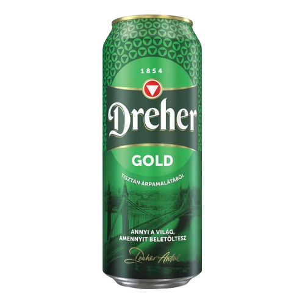A Dreher egy világszerte ismert sör,kesernyés ízvilággal.
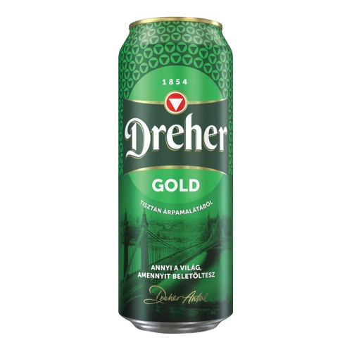A Budweiser egy amerikai prémium sör, mely könnyű, friss ízével és enyhe malátás utóízzel rendelkezik.
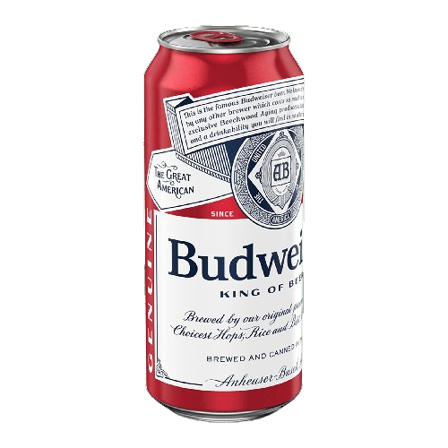A Heineken egy lager sör, friss, enyhén kesernyés ízvilággal.
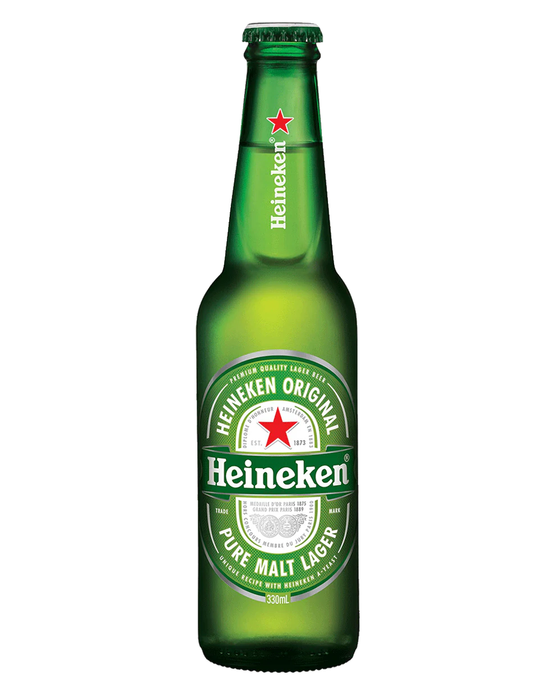A Carlsberg egy dán lager, enyhe ízű és könnyed, amit sokan kedvelnek frissítő hatása miatt.
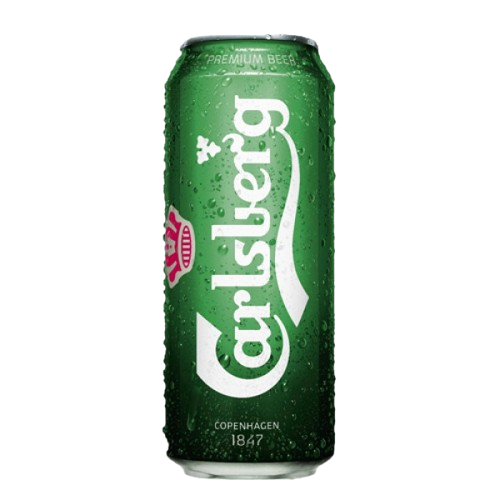A Guinness egy híres ír stout sör, sötét színű és gazdag, krémes habbal, amely egyedi ízélményt nyújt.
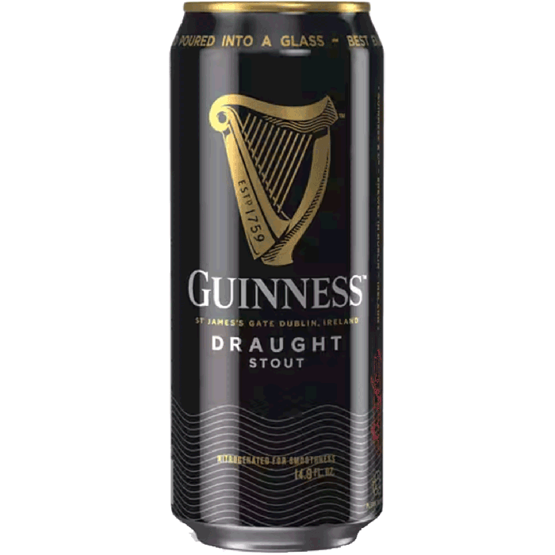A Chardonnay egy világszerte elterjedt fehérbor, amely gyümölcsös ízvilágával és frissítő karakterével hódít.
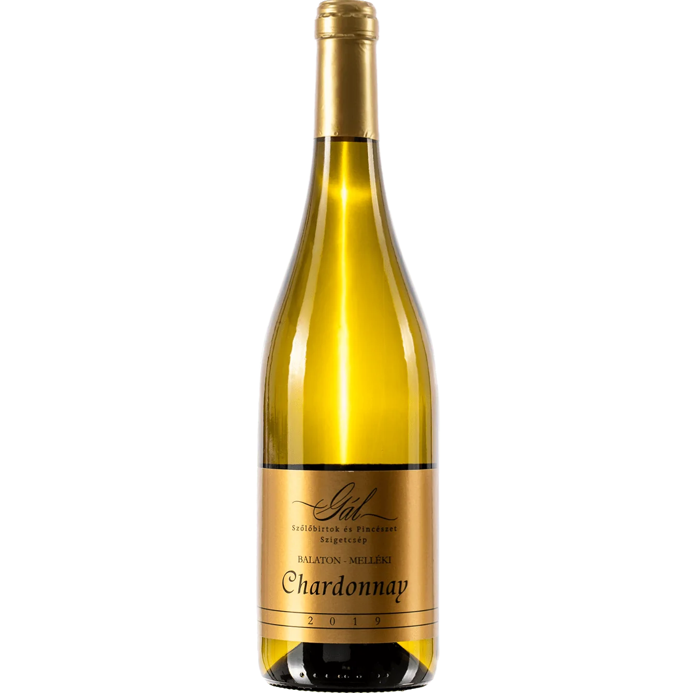A Cabernet Sauvignon egy erőteljes vörösbor, amely gazdag tanninokkal és fekete gyümölcsök ízével rendelkezik.
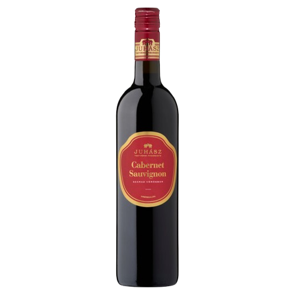A Merlot egy lágy, finom vörösbor, amely a szilva és a bogyós gyümölcsök gazdag ízvilágát kínálja.
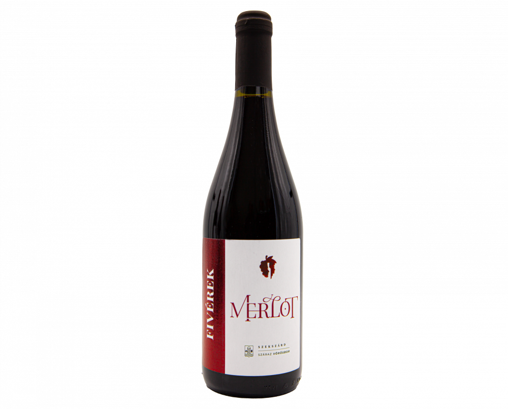A Sauvignon Blanc egy könnyed, frissítő fehérbor, amely citrusos és füves jegyeket kínál.
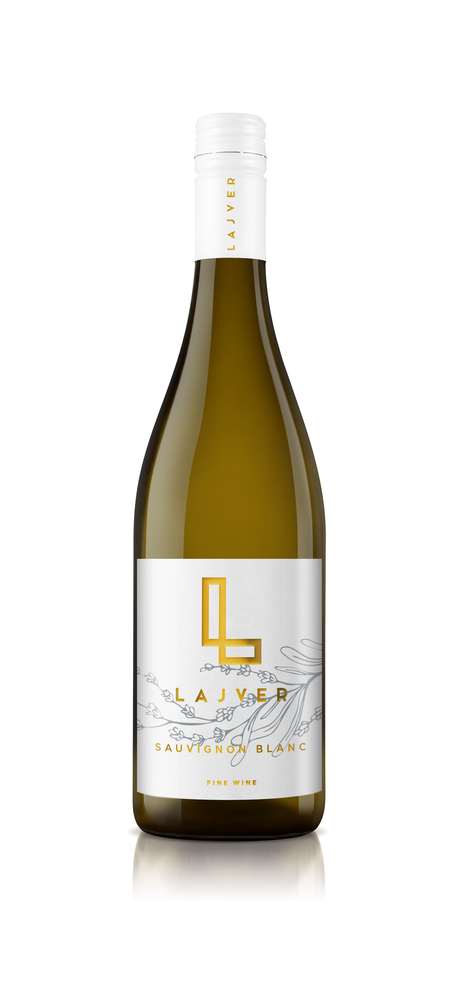A Pinot Noir egy elegáns vörösbor, mely finom ízvilága és rózsás illata révén az egyik legkedveltebb bor.
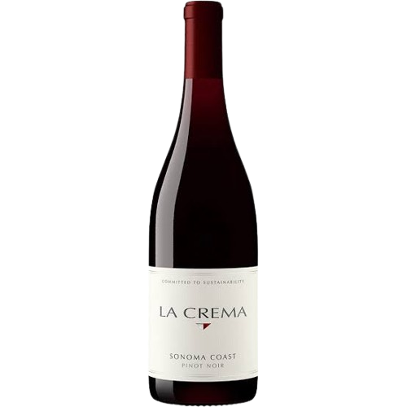